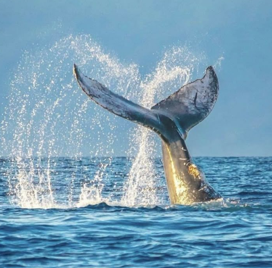
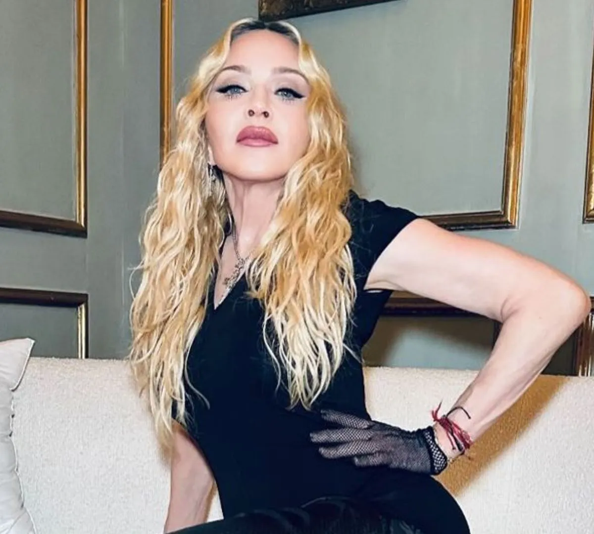
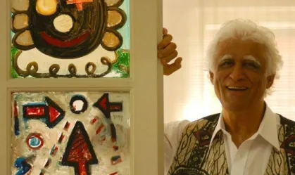

Notícias
Aqui no Today News você acompanha as últimas notícias do mundo, sobre vários assuntos!

'Amizade' inusitada entre baleias e golfinhos surpreende cientistas
Em vez de simples encontros casuais, as duas espécies estão estabelecendo laços que surgerem brincadeiras, estimulação mútua e até comportamentos semelhantes ao acasalamento, diz estudo.

Madonna anúncia novo álbum 'Dance' para 2026
Ele será produzido por Stuart Price, com quem a cantora criou 'Confessions on a Dance Floor' (2005), composto por sucessos como 'Hung Up' e 'Sorry'.
Feira Pan-Amazônica do Livro acontece em Belém
Evento reúne mais de 170 estandes de editoras e livrarias no Hangar Centro de Convenções da Amazônia, com programação gratuita até sexta-feira (22).

Exposição "Mundo Zira" mostra as criações e o legado de Ziraldo
Mostra gratuita no Centro Cultural Banco do Brasil traz animações e atividades interativas que resgatam personagens icônicos do cartunista, como o Menino Maluquinho.